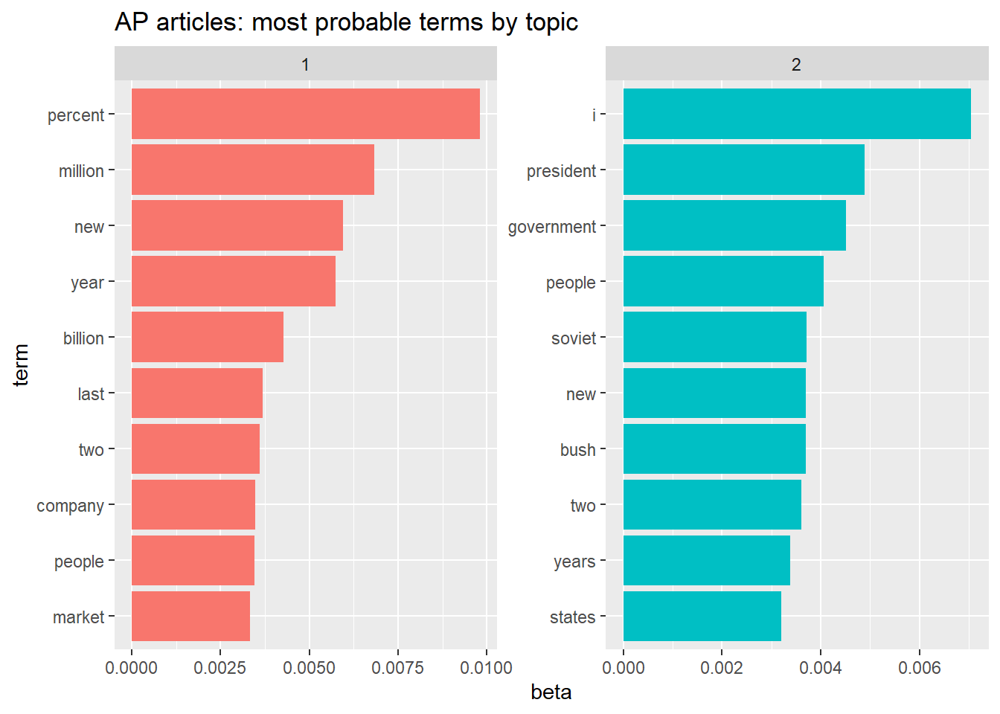
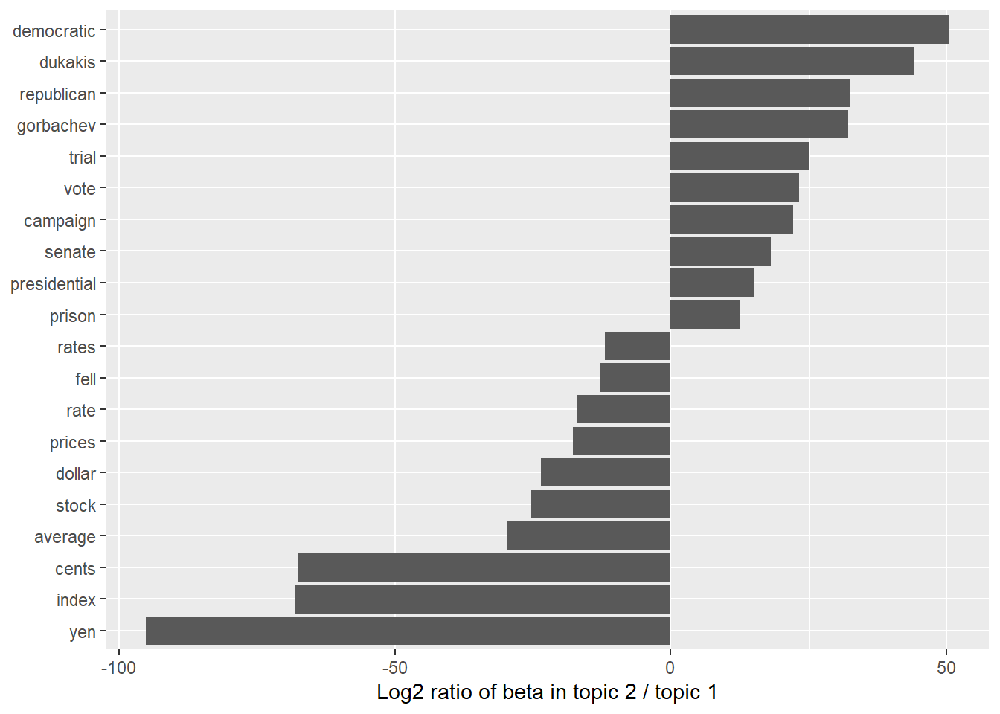

Introduce latent Dirichlet allocation (LDA) using Gibbs sampling.
Background
Latent Dirichlet Allocation (LDA) was proposed by Blei, Ng, and Jordan (2003) as a method of topic modeling. The method is briefly mentioned in Part 1 of the course. Several course participants requested a more detailed description. This note is a response to that request.
Text Analysis
Part 1, Session 2b, of the course presents an overview of text analysis based on Silge and Robinson (2017). The authors use the R function topicmodels::LDA() with default parameter setting method = VEM, which denotes the Variational Expectation Maximization (EM) algorithm. In this note we use an alternative implementation of LDA described below.
Generative Model
LDA treats each document as a mixture of topics, and each topic as a mixture of words. LDA adopts a bag-of-words model in which each document \(d\) in a corpus of documents \(\mathcal{D}\) is generated from two Dirichlet distributions: \(Dir(\alpha_\bullet)\) over \(K\) possible topics; and \(Dir(\eta_\bullet)\) over \(N\) possible words. In this model documents are presumed to have been randomly generated as follows.1
Generate word probability vector \(\phi_\bullet (k) \sim Dir(\eta_\bullet )\) for each topic index \(k \in \{ 1, 2, \ldots, K \}\)
Then for each document \(d \in \mathcal{D}\) and for each word position \(\nu \in d\):2
Generate topic probability vector \(\theta_\bullet (d) \sim Dir(\alpha_\bullet)\)
Assign topic index \(\kappa (d,\nu) \sim \theta_\bullet (d)\)
Generate word index \(\omega (d,\nu) \sim \phi_\bullet (\kappa (d,\nu))\)
These Dirichlet distributions are typically assumed to be symmetric. That is, if we define
then current practice is to set all elements of vectors \(\alpha_\bullet\) and \(\eta_\bullet\) equal to their respective average values.
\[
\begin{align}
\alpha_k &= \bar{\alpha} \quad \text{for } k \in \{1, \ldots, K \} \\
\eta_\nu &= \bar{\eta} \quad \text{for } \nu \in \{1, \ldots, N \}
\end{align}
\qquad(2)\]
The values \(\bar{\alpha}\) and \(\bar{\eta}\) are called concentration parameters.
For a symmetric Dirichlet distribution as above, if \(\bar{\alpha} < 1\) then for each document \(d\), \(Dir(\alpha_\bullet)\) tends to generate a sparse probability vector \(\theta_\bullet (d)\) that gives most of its weight to just a few of the K topics (with the selection of topics varying across documents). On the other hand, if \(\bar{\alpha} > 1\) then \(Dir(\alpha_\bullet)\) tends to generate a more uniform probability vector \(\theta_\bullet (d)\) spread more evenly across all topics.
As for the distribution of words within a topic, in most applications the number \(N\) of distinct words in the corpus \(\mathcal{D}\) may be a few thousand or even a few tens of thousands. Then each topic is a mixture across a distinct subset of a large number of words, typically with \(\bar{\eta} < 1\).
See Antoniak (2023) for practical suggestions on these and other settings and workflows.
News Article Example
Data
The R package topicmodels3 includes the AssociatedPress data representing 2246 news articles from the AP news agency, mostly published around 1988. The data are in the form of a list4 that includes a sparse matrix giving the document-index, the term-index, and the frequency (number of occurrences) of the indexed term (word) within each document (news article). The list also contains a vector of the terms themselves.
LDA function
The topicmodels package also includes function LDA() that performs latent Dirichlet Allocation. The function determines the probable topic of each word within each document by one of two methods: (1) “VEM” (Variational Expectation Maximization); or else (2) “Gibbs” (Gibbs Sampling). The function output, depending on the choice of method, is a list conforming to the format of either LDA_VEM or else LDA_Gibbs. Here we choose the Gibbs Sampling method because it requires less memory.
Show the code
# avoid `topicmodels` if possible: it's slow to loadif (topicmodels_loaded) {data("AssociatedPress", package ="topicmodels")}# AssociatedPress |> object.size(): 5.5 MB# AssociatedPress# <<DocumentTermMatrix (documents: 2246, terms: 10473)>># Non-/sparse entries: 302031/23220327# Sparsity : 99%# Maximal term length: 18# Weighting : term frequency (tf)# str(AssociatedPress)# List of 6# $ i : int [1:302031] 1 1 1 1 1 1 1 1 1 1 ...# $ j : int [1:302031] 116 153 218 272 299 302 447 455 548 597 ...# $ v : num [1:302031] 1 2 1 1 1 1 2 1 1 1 ...# $ nrow : int 2246# $ ncol : int 10473# $ dimnames:List of 2# ..$ Docs : NULL# ..$ Terms: chr [1:10473] "aaron" "abandon" "abandoned" "abandoning" ...# - attr(*, "class")= chr [1:2] "DocumentTermMatrix" "simple_triplet_matrix"# - attr(*, "weighting")= chr [1:2] "term frequency" "tf"# object.size(AssociatedPress)# 5539768 bytes
Here are the first few terms extracted from the news articles. They are listed alphabetically and indexed in that order.
# A tibble: 10,473 × 2
idx term
<dbl> <chr>
1 1 aaron
2 2 abandon
3 3 abandoned
4 4 abandoning
# ℹ 10,469 more rows
Here is the document-term matrix in sparse format. The columns denote the index of the document, the index of the term, and the term-frequency, that is, the number of occurrences of the term within the document.
# Latent Dirichlet Allocation via Gibbs Samplingextract_from_AP_DTM <-FALSEif (extract_from_AP_DTM && topicmodels_loaded) { ap_gs <- AssociatedPress |> topicmodels::LDA(# number of topicsk =2, method ="Gibbs", # set seed to ensure results can be reproducedcontrol =list(seed =1234) )} else {# TODO: decide whether and how to store ap_gs}# ap_gs |> object.size(): 7.5 MB# 7493512 bytes
From the LDA_Gibbs output we extract the following “beta” matrix, that is the matrix of fitted probabilities that a term within a given document belongs to topic 1 or 2, respectively.
Here are the most probable terms for each of the two constructed topics, along with their probabilities (beta), shown as a bar chart.

Figure 1: AP articles: most probable terms by topic
Topics 1 and 2 seem to pertain to business and politics, respectively, although “new” and “people” are prominent terms for both topics.
Another way to compare topics 1 and 2 is to examine the terms shared by the two topics and then find the terms having the biggest disparity in (topic, term) probability (beta). Here’s a bar chart showing the more prominent differences, expressed as
restricting the set of terms to those assigned to both topics \((\min(\beta_1, \beta_2) > 0)\) with at least one of them exceeding a probability threshhold, say \((\max(\beta_1, \beta_2) > 0.001)\).

Figure 2: Log2 ratio of beta in topic 2 / topic 1
This figure further supports the earlier conjecture that topics 1 and 2 pertain to business and politics, respectively.
The LDA-Gibbs Algorithm
The LDA identification of topics is a particular form of Markov chain Monte Carlo (MCMC) method. The data can be summarized as the set of unique words across the corpus of documents, along with counts of those unique words per document. The objective is to determine the topic of each word instance within each document.
Assignment of topics to word positions is intially made at random in a manner similar to the generative model outlined above. We thereby have initial values for:
\[
\begin{align}
n_{d, k} &= \text{number of assignments of topic } k \text{ to document } d \\
n_{w, k} &= \text{number of assignments of topic } k \text{ to unique word } w \\
n_k &= \text{number of assignments of topic } k \text{ across corpus } \mathcal{D}
\end{align}
\qquad(4)\]
Then through many iterations the prior distributions \(Dir(\alpha_\bullet)\) and \(Dir(\eta_\bullet)\) are updated to form posterior distributions based on the data.
The Gibbs sampling procedure treats each word position in the text collection in turn, and estimates the probability of assigning the word in that position to each topic, conditioned on the current topic assignments of all other words. From this conditional distribution, a topic is generated and stored as the new topic assignment for the given word in the given position.
A great computational savings is achieved by the choice of a Dirichlet prior for the multinomial distribution of unique topic instances per document, because the Dirichlet distribution is conjugate to the multinomial distribution. For further details on this updating algorithm see Steyvers and Griffiths (2007).
Concluding Remarks
Topic modeling is an active area of research that contributes to the statistical analysis of large document collections. The LDA model of document-generation enables Bayesian analysis of the latent structure of a corpus of documents.
Blei, David M., Andrew Y. Ng, and Michael I. Jordan. 2003. “Latent Dirichlet Allocation.”J. Mach. Learn. Res. 3 (null): 993–1022.
Grün, Bettina, and Kurt Hornik. 2011. “Topicmodels: An r Package for Fitting Topic Models.”Journal of Statistical Software 40 (13): 1–30. https://doi.org/10.18637/jss.v040.i13.
Silge, Julia, and David Robinson. 2017. Text Mining with r: A Tidy Approach. O’Reilly Media. https://www.tidytextmining.com/.
Other authors use the verb “sample” rather than “generate” to mean random generation from a specified probability distribution.↩︎
We assume that document \(d\) consists of \(n_d\) word positions, which is either a fixed positive integer, or else is generated independently of other random variables.↩︎